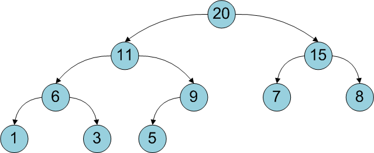
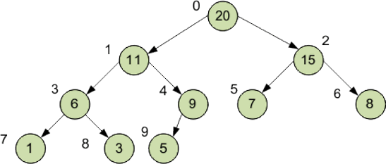
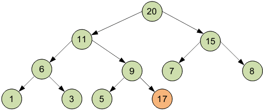
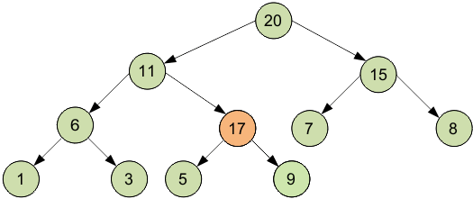
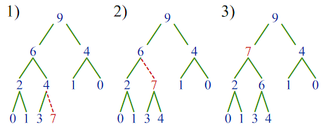
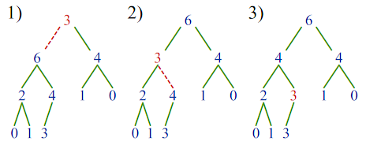

Двоичная куча – реализуемая структура данных, позволяющая быстро (за логарифмическое время) добавлять элементы и извлекать элемент с максимальным приоритетом.
Двоичная куча представляет собой полное бинарное дерево, для которого выполняется основное свойство кучи: приоритет каждой вершины больше приоритетов её потомков. В простейшем случае приоритет каждой вершины можно считать равным её значению. В таком случае структура называется max-heap, поскольку корень поддерева является максимумом из значений элементов поддерева. Также, что дерево называется полным бинарным, если у каждой вершины есть не более двух потомков, а заполнение уровней вершин идет сверху вниз (в пределах одного уровня – слева направо).

Двоичную кучу удобно хранить в виде одномерного массива, причем левый потомок вершины с индексом i имеет индекс 2*i+1, а правый 2*i+2. Корень дерева – элемент с индексом 0. Высота двоичной кучи равна высоте дерева, то есть она равна количеству рёбер в самом длинном простом пути, соединяющем корень кучи с одним из её листьев.
Высота кучи есть O(logN), где N — количество узлов дерева. Высота кучи определяется как высота двоичного дерева.
Двоичная кура это такое двоичное дерево, для которого выполнены три условия:
Существуют также кучи, где значение в любой вершине, наоборот, не больше, чем значения её потомков. Такие кучи называются min-heap, а кучи, описанные выше — max-heap. Удобная структура данных для сортирующего дерева — массив A, у которого первый элемент, A[1] — элемент в корне, а потомками элемента A[i] являются A[2i] и A[2i+1] (при нумерации элементов с первого). При нумерации элементов с нулевого, корневой элемент — A[0], а потомки элемента A[i] —A[2i+1] и A[2i+2]. При таком способе хранения условия 2 и 3 выполнены автоматически.
Двоичную кучу удобно хранить в виде одномерного массива, причем

Корень дерева – элемент с индексом 0. Высота двоичной кучи равна высоте дерева, то есть log2 (N+1)↑,где N – количество элементов массива, ↑ – округление в большую сторону до ближайшего целого.
Для представленной кучи log2 (10+1)↑ = 3,46↑ = 4. Способ построить кучу из неупорядоченного массива – это по очереди добавить все его элементы. Временная оценка такого алгоритма оценивается как N·log2N.
Можно построить кучу за N шагов. Для этого сначала следует построить дерево из всех элементов массива, не заботясь о соблюдении основного свойства кучи, а потом вызвать метод упорядочения для всех вершин, у которых есть хотя бы один потомок (так как поддеревья, состоящие из одной вершины без потомков, уже упорядочены).
Потомки гарантированно есть у первых heapSize/2 вершин, где heapSize – размер кучи.
class Heap
{
static const int SIZE = 100; // максимальный размер кучи
int *h; // указатель на массив кучи
int HeapSize; // размер кучи
public:
Heap(); // конструктор кучи
void addelem(int); // добавление элемента кучи
void outHeap(); // вывод элементов кучи в форме кучи
void out(); // вывод элементов кучи в форме массива
int getmax(); // удаление вершины (максимального элемента)
void heapify(int); // упорядочение кучи
};
Heap :: Heap()
{
h = new int[SIZE];
HeapSize = 0;
}
Новый элемент добавляется на последнее место в массиве, то есть позицию с максимальным индексом.
Возможно, что при этом будет нарушено основное свойство кучи, так как новый элемент может быть больше родителя. В таком случае новый элемент «поднимается» на один уровень (менять с вершиной-родителем) до тех пор, пока не будет соблюдено основное свойство кучи.


Сложность алгоритма не превышает высоты двоичной кучи (так как количество «подъемов» не больше высоты дерева), то есть равна log2 N.
void Heap :: addelem(int n)
{
int i, parent;
i = HeapSize;
h[i] = n;
parent = (i-1)/2;
while(parent >= 0 && i > 0)
{
if(h[i] > h[parent])
{
int temp = h[i];
h[i] = h[parent];
h[parent] = temp;
}
i = parent;
parent = (i-1)/2;
}
HeapSize++;
}
void Heap:: outHeap(void)
{
int i = 0;
int k = 1;
while(i < HeapSize)
{
while((i < k) && (i < HeapSize))
{
cout << h[i] << " ";
i++;
}
cout << endl;
k = k * 2 + 1;
}
}
void Heap:: heapify(int i)
{
int left, right;
int temp;
left = 2*i+1;
right = 2*i+2;
if(left < HeapSize)
{
if(h[i] < h[left])
{
temp = h[i];
h[i] = h[left];
h[left] = temp;
heapify(left);
}
}
if(right < HeapSize)
{
if(h[i] < h[right])
{
temp = h[i];
h[i] = h[right];
h[right] = temp;
heapify(right);
}
}
}
В упорядоченном max-heap максимальный элемент всегда хранится в корне. Восстановить упорядоченность двоичной кучи после удаления максимального элемента можно, поставив на его место последний элемент и вызвав метод упорядочения для корня, то есть упорядочив все дерево.
int getmax(void)
{
int x;
x = h[0];
h[0] = h[HeapSize-1];
HeapSize--;
heapify(0);
return(x);
}
Пирамидальная сортировка была предложена Дж. Уильямсом в 1964 году. Это алгоритм сортировки массива произвольных элементов; требуемый им дополнительный объём памяти не зависит от количества исходных данных. Время работы алгоритма — O(n*ln*n) в среднем, а также в лучшем и худшем случаях.
Пирамида — двоичное дерево, в котором значение каждого элемента больше либо равно значений дочерних элементов.
Заполнив дерево элементами в произвольном порядке, можно легко его отсортировать (легче, чем исходный список элементов), превратив в пирамиду. Самый большой элемент пирамиды находится в её вершине.
Возрастающей пирамидой называется почти заполненное дерево, в котором значение каждого элемента больше либо равно значений всех его потомков. Аналогично, в убывающей пирамидезначение каждого элемента меньше либо равно значений потомков.Возрастающей пирамидой называется почти заполненное дерево, в котором значение каждого элемента больше либо равно значений всех его потомков. Аналогично, в убывающей пирамидезначение каждого элемента меньше либо равно значений потомков.
Рассмотрим теперь задачу присоединения элемента с произвольным значением к возрастающей пирамиде. Если просто добавить элемент в конец массива, то свойство пирамиды (значение любого элемента больше либо равно значения его родителя) может быть нарушено. Для восстановления свойства пирамиды к добавленному элементу применяется процедура просеивания вверх, которая описывается следующим алгоритмом:
Пример просеивания вверх добавленного элемента показан на рисунке:

Что делать, если нам нужно заменить корневой элемент на какой-либо другой? В этом случае пирамидальную структуру двоичного дерева можно восстановить с помощью процедуры просеивания вниз:
Пример просеивания вниз показан на рисунке:

template<class T> void SiftDown(T* const heap, int i, int const n)
{ //Просеивает элемент номер i вниз в пирамиде heap.
//n -- размер пирамиды
//Индекс максимального элемента в текущей тройке элементов:
int nMax( i );
//Значение текущего элемента (не меняется):
T const value( heap[i] );
while ( true )
{ //Рассматривается элемент i и его потомки i*2+1 и i*2+2
//В начале каждой итерации nMax == i и value == heap[i]
int childN( i*2+1 ); //Индекс левого потомка
//Если есть левый потомок и он больше текущего элемента,
if ( ( childN < n ) && ( heap[childN] > value ) )
nMax = childN; // то он считается максимальным
++childN; //Индекс правого потомка
//Если есть правый потомок и он больше максимального,
if ( ( childN < n ) && ( heap[childN] > heap[nMax] ) )
nMax = childN; // то он считается максимальным
//Если текущий элемент является максимальным из трёх
// (т.е. если он больше своих детей), то конец:
if ( nMax == i ) break;
//Меняю местами текущий элемент с максимальным:
heap[i] = heap[nMax]; heap[nMax] = value;
// при этом значение value будет в ячейке nMax,
// поэтому в начале следующей итерации значение value
// правильно, т.к. мы переходим именно к этой ячейке
//Переходим к изменившемуся потомку
i = nMax;
};
}
Имея построенную пирамиду, несложно реализовать сортировку. Так как корневой элемент пирамиды имеет самое большое значение, мы можем отделить его и поместить в отсортированный список. Вместо отсутствующего корневого элемента можно поставить последний (в смысле нумерации) элемент дерева и, просеяв его вниз, снова получить пирамиду.
В новой уменьшенной пирамиде корень имеет самое большое значение среди оставшихся элементов. Его снова можно отделить и поместить в отсортированный список перед имеющимися там элементами, и так далее.
Для хранения отсортированного списка будем использовать элементы исходного массива, освобождающиеся в результате уменьшения размера пирамиды. Алгоритм получается следующий:
По мере работы алгоритма, часть массива, занятая деревом, уменьшается, а в конце массива накапливается отсортированный результат.
template<class T> void HeapSort(T* const heap, int n)
{ //Пирамидальная сортировка массива heap.
// n -- размер массива
//Этап 1: построение пирамиды из массива
for(int i(n/2-1); i>=0; --i) SiftDown(heap, i, n);
//Этап 2: сортировка с помощью пирамиды.
// Здесь под «n» понимается размер пирамиды
while( n > 1 ) //Пока в пирамиде больше одного элемента
{
--n; //Отделяю последний элемент
//Меняю местами корневой элемент и отделённый:
T const firstElem( heap[0] );
heap[0] = heap[n];
heap[n] = firstElem;
//Просеиваю новый корневой элемент:
SiftDown(heap, 0, n);
}
}